Застосунок уже існував, але дизайн і брендинг застаріли, а нові сервіси не мали місця.
Тому редизайн, а не косметика: нова система, нова головна, вхід і транспорт, плюс сервіси, яких раніше не було. Над застосунком ми працювали 10 місяців, перше MVP у новому дизайні вийшло в реліз за півтора.
Обмеження: реліз разом із розробкою, досліджень із людьми не було, а розмір тексту в режимах доступності рахує розробка за формулою.
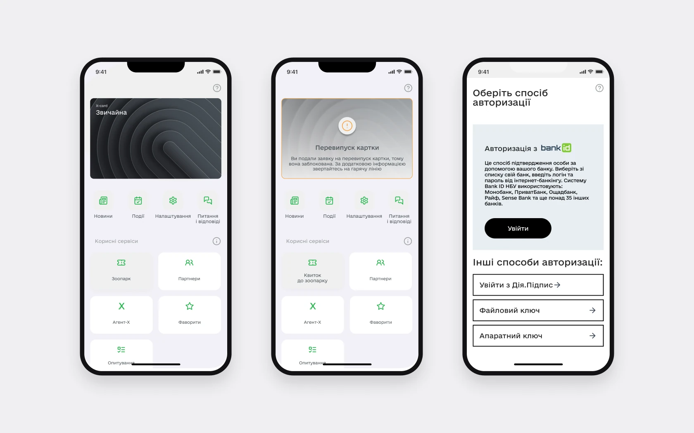
Моя роль
Флоу ми вели паралельно вдвох і правили одне одного, брендбук, іконки й анімації – не мої. Повністю мої: UI kit і стилі, доступність, авторизація, Мапа незламності, редизайн новин, опитувань і анкети на картку. Перші версії мап і транспорту доводили вдвох.

Що змінилось
| Що | Було | Стало |
|---|---|---|
| Головна | Однакові плитки для всіх | Підлаштовується під стан: без входу, без картки, з карткою |
| Статуси картки | Текст на банері, «зверніться на гарячу лінію» | Причина й дія: «Виправити анкету», «Звʼязатися з підтримкою» |
| Вхід | Абзац про BankID, далі інші способи рядками | Способи згруповано, 17 нових станів – помилки, повторний вхід, скидання коду |
| Транспорт | Мапа з номерами маршрутів і спільний список маршрутів, метро не було | Мапа, маршрути на зупинці з розкладом, метро з гілками |
| Новини й події | Фільтр – окремий екран | Усі фільтри на одному екрані |
| Доступність | Немає | Текст 100, 130 і 160%, чотири колірні режими |
| Нові сервіси | – | «Мій депутат», «Захисникам», Мапа незламності, центр сповіщень |
Доступність і система
Доступність – частина системи, а не фіча наприкінці: висока контрастність, градація сірого й текст 100, 130 і 160%, картки ростуть разом із текстом. Під цим – 48 семантичних токенів у чотирьох режимах, тож тема чи контраст – це перемикання режиму, а не новий набір макетів. Кнопки – 48 px: замовник просив вужчі й прийняв 48 після аргументації стандартами.


Головна підлаштовується під стан людини
- Чому
- Люди відкривають застосунок без акаунта, без картки харківʼянина, з карткою або з анкетою на розгляді чи відхиленою. Стара головна – однакові плитки для всіх.
- Що зробила
- Головна змінюється за станом: новини й «Увійти з ID.GOV.UA», новини для тих, хто без картки, X-card і швидкі дії для тих, хто з карткою.
- Результат
- Кожен бачить свій наступний крок замість того самого набору плиток.
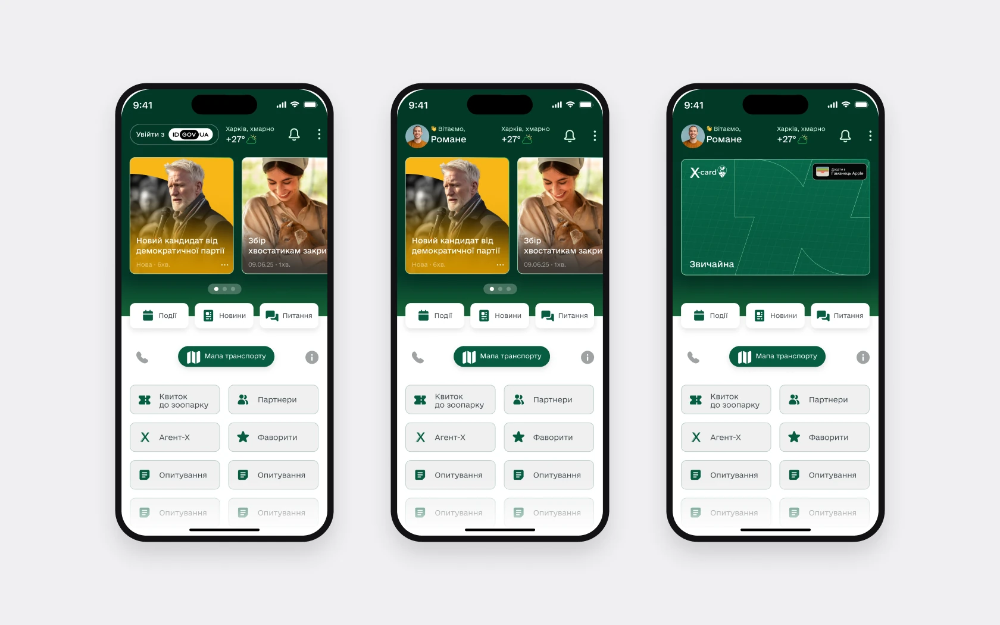
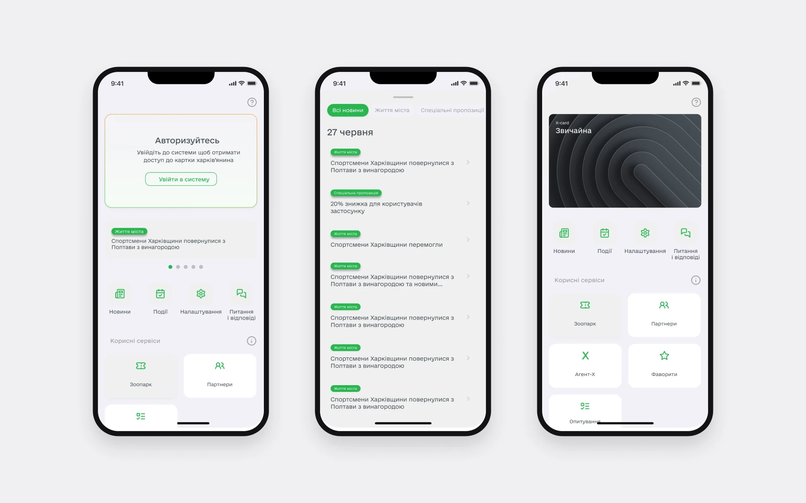
БулоСталоСтатус картки завжди має наступний крок
- Чому
- У старій версії статус – текст на банері. Про заблоковану картку: «звертайтесь на гарячу лінію», і в застосунку більше нічого зробити не можна.
- Що зробила
- Окремий екран для кожного статусу: що сталося і що робити. Анкету відхилено – «Виправити анкету», картку заблоковано – «Звʼязатися з підтримкою». Місце під картку, поки анкета на перевірці.
- Результат
- На екрані відмови чи блокування є наступна дія – одразу, без переходів.
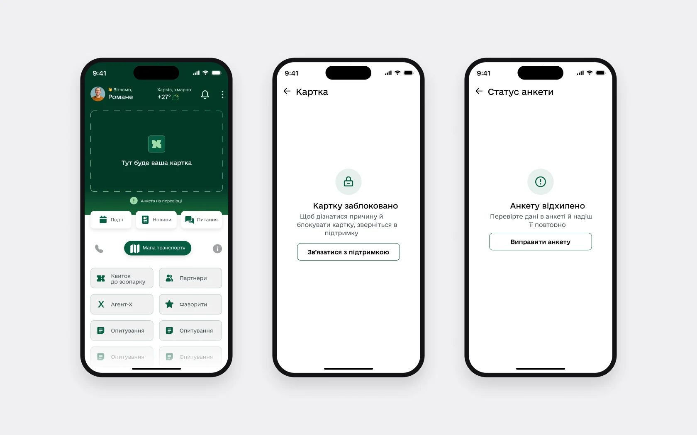
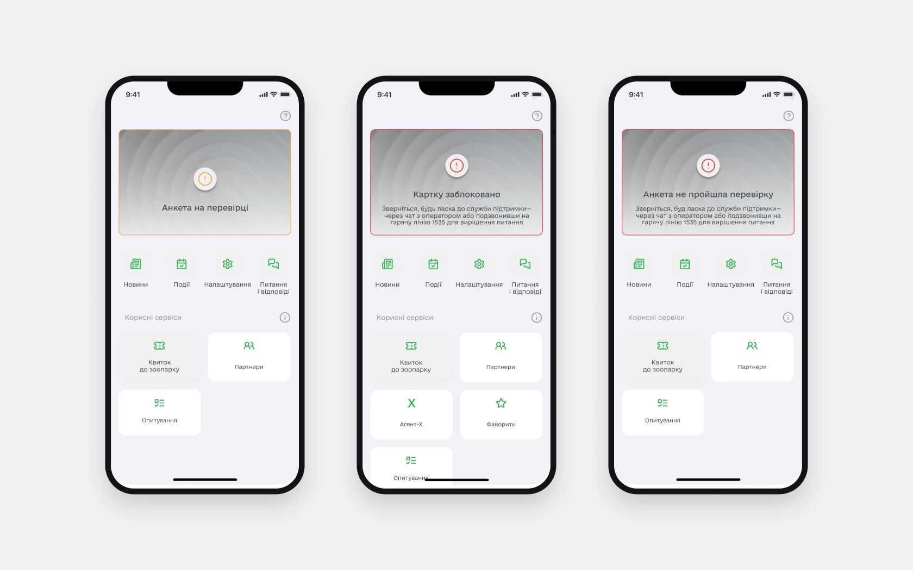
БулоСталоВхід: ті самі способи, зрозуміліший вибір і всі стани
- Чому
- Старий вхід починався з абзацу про BankID, решта способів – однаковими рядками нижче.
- Що зробила
- Вхід через ID.GOV.UA зі згрупованими способами: електронний підпис (файловий носій, токен, хмарне сховище), Bank ID НБУ, Дія.Підпис, Дія.OAuth. Вибір «Я» чи «Моя дитина», дата народження, безпечний вхід кодом і біометрією.
- Результат
- 17 нових станів, яких не було: прострочений код, забагато спроб, немає інтернету, вхід скасовано, паспорт не знайдено, сесія завершилась та інші.
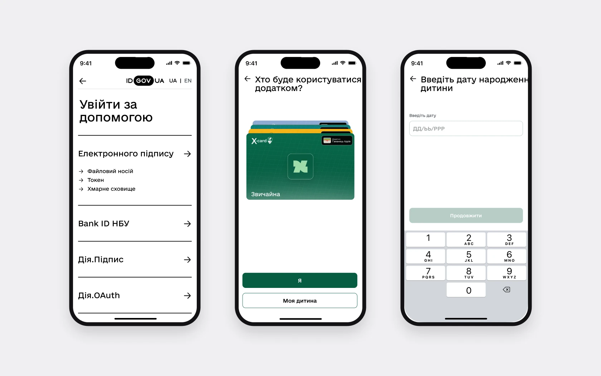
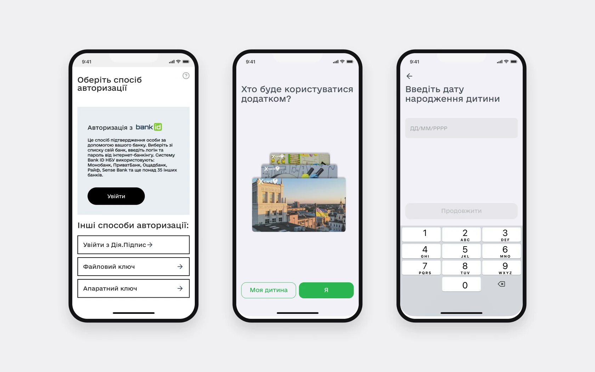
БулоСталоТранспорт і метро
- Чому
- Назви й CTA були неочевидні, пошук і розклади потребували переробки, кінцеві станції не мали своїх сценаріїв, а метро в застосунку не було зовсім.
- Що зробила
- Нові назви й CTA, пошук, структура розкладів, сценарії для кінцевих, нове метро з гілками, розкладом і виходами, ліміт обраних маршрутів. Окремі стани: повітряна тривога на мапі, офлайн, геолокація вимкнена.
- Результат
- У метро видно напрямки, розклад буднів і вихідних та відкриті виходи, а на мапі – інклюзивний транспорт.
СтатусФлоу погодили із замовником. Розклад потім кілька разів переробляли на його запит, тестів із людьми не було.

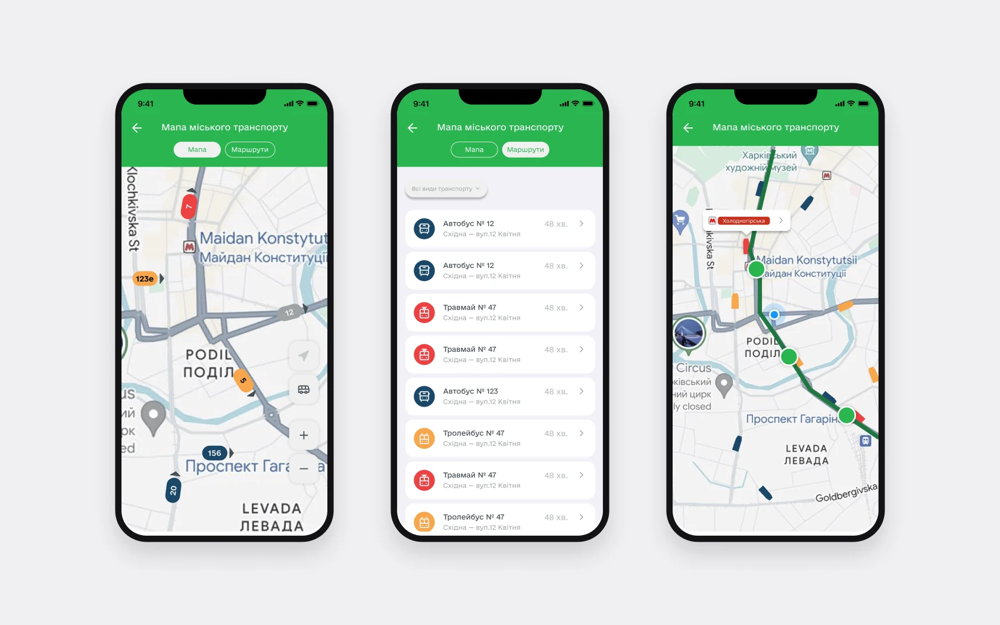
БулоСталоПрототип
Мапа транспорту, пошук маршруту й новини
Екрани з фінального дизайну. Прототип гортається сам, а в режимі «Спробувати самій» його можна проклікати.
- Головна
- Мапа транспорту
- Пошук зупинки
- Маршрути на зупинці
- Деталі маршруту
- Маршрут на мапі
- Новини й події
Нове, чого не було
У старій версії цих сервісів не було. Найбільші з моїх – звернення до депутата й запис у «Захисникам».
«Мій депутат»: звернення з прозорими статусами
Людина надсилала звернення і не розуміла, що з ним і де шукати відповіді. Тепер статуси, причина, якщо звернення не розглядають, і вся історія відповідей – у картці звернення, разом із документами й оцінкою.
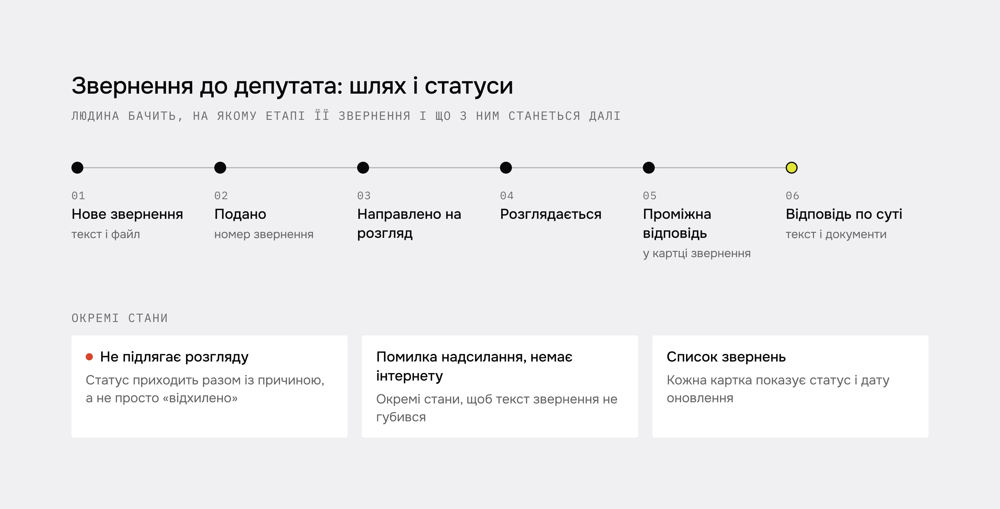
«Захисникам»: запис до установи з телефона
Людина обирає категорію звернення, читає опис послуги, обирає дату й вільний час і заповнює дані заявника. Після запису – талон із деталями, а сам запис зʼявляється в списку на головній сервісу. Установу можна знайти на мапі або списком, з фільтрами за районом і типом. Окремі стани: немає вільного часу на дату, не вдалося записатися, запис скасовано установою, візит пропущено.
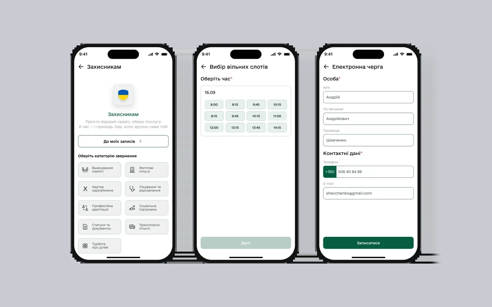
Фільтри на одному екрані, текст, який можна читати
Кожен фільтр подій відкривався окремим екраном. Тепер усі фільтри на одному екрані, обрані скасовують одним дотиком. Заголовки 26 px, текст 16 px, кнопки 48 px.
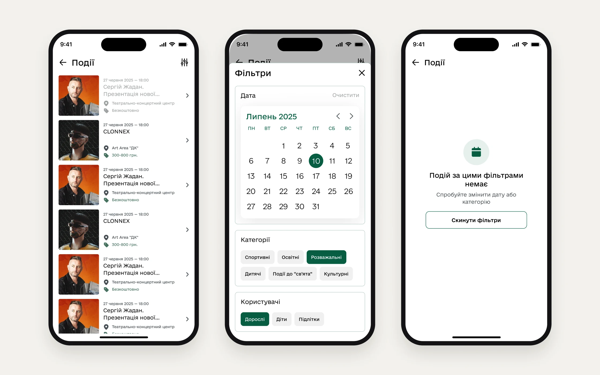
- 01
Міський застосунок тримається на спільних правилах: 33 кольори з погоджених екранів я перевела в стилі, тости звела в один компонент, і новини, транспорт та звернення почали поводитися однаково.
- 02
Не все прийняли: я пропонувала опитати людей, що потрібно на головній, і полегшити її, але головна лишилася в погодженому вигляді.
- 03
Без досліджень погодження не відповідало, чи стало зручніше. Далі я б перевірила з людьми пошук транспорту, статуси звернень і інтерфейс зі збільшеним текстом.